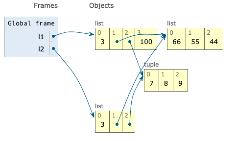
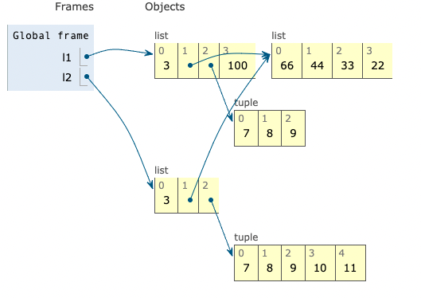
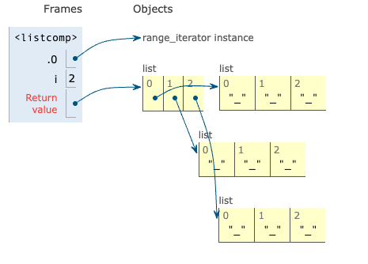
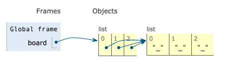
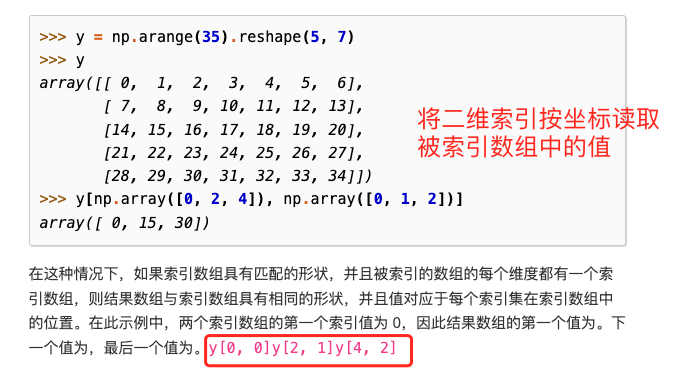
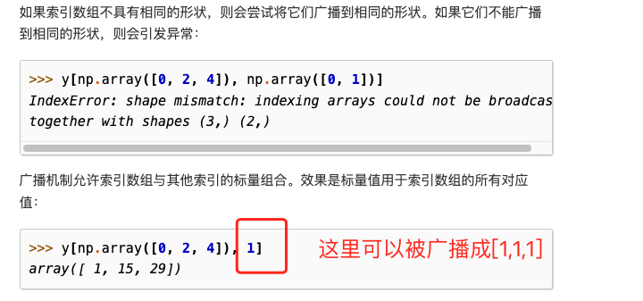

一些记一下更方便的特性
Python的列表list或者字符串str和C一样是从0开始的。所以当我们使用列表时
my_list[:3]就是返回前三个对象，也就是一个前闭后开区间。因此在使用时，需要返回前n个元素，就直接[:n]即可。在此之上如果想把这个列表分割成两个不重叠的部分，写成my_list[:n],my_list[n:]即可。
在计算切片或区间长度时区间[3:6]的长度就是后者-前者，即6-3=3。
对象切片
s[a:b:c]意思是在a和b为之间以c为间隔取值。如果c为负值，则从b开始反向取值到a。
多维切片与省略
[]运算符里可以用逗号隔开进行索引，或者切片，NumPy也可以用这个特性。二维的numpy.ndarray就可以用a[i, j]这种形式来获取。或者a[m:n, k:l]的方式来获得二维切片。
省略的正确书写方法是三个英语句号...,不是Unicdoe里的半个省略号『…』。
如果有四位数组x，则x[i, ...]和x[i, :, :, :]是一个意思。
1 | l = list(range(10)) |
对序列使用+=,*=
一个序列乘以一个整数，会产生一个新序列
1 | l = [1, 2, 3] * 5 |
由序列组成的列表
如果要初始化一个嵌套着几个列表的列表，会有一些小问题。
序列的别名与元组的相对不可变性
因为python语言中变量用=把一个变量x赋值给另外一个变量y时，即y = x时，不是C++中先声明一个新的变量，在给这个新的变量赋值，而是吧这个变量的引用赋给目标对象。
1 | a=[1,2,3] |
在这里，如果用is运算符，如a is b判断的是a和b是不是指向内存中的同一片空间，（个人看法）即这两个变量中存储的是某个特定的内存地址，类似于C++中的指针，是相同存储空间的不同别名。而==就是比较值是否相同。
在复制列表时，默认是浅复制，即只是给同一个数据又新增了一个别名。一个相关示例如下：
1 | l1 = [3,[66,55,44], (7,8,9)] |

这里l2只是新建了一个list对象，内部存储的是元素的引用，所以l1[1]的改变会导致l2[1]一起变。
1 | l2[1] += [33,22] |

这里的()运算符是改变的元组，对元组进行增量赋值时（+=），元组改变就会新建一个新的元组来存储新的元素。
初始化一个三个列表包含三个元素的二维数组
1 | board=[['_'] * 3 for i in range(3)] |

如果用*,就会出问题
1 | board=[['_'] * 3]*3 |

其实list中三个元素都是指向同一个list数组。要注意这个问题
NumPy数组的索引与切片
除了满足list切片的一些应用外，还有一些其他需要注意的地方。
https://numpy.org/doc/stable/user/basics.indexing.html#basics-indexing
多维数组索引


待续